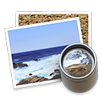

UI官网
回收站
GameCenter
iCloud
地图
设置
登录页(双击)
切换壁纸
今天
通知
1月6日 星期日
戊戌年十二月初一
天气
下午3:54
广州市

17
- finder

- computer
- gamecenter

- icloud

- prefapp

- trashicon

- appstore

- iTunes

- imusic

- preview 
- mail

- notes.png
- messages

- maps

- ibooks

- facetime
- launchpad